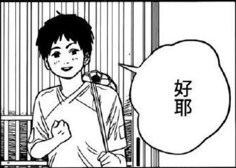

列表
1.外部連接 超連結 anchor < a >
開新分頁打開target="_bank" google
href是Hypertext Reference的缩写
目前這頁面打開target="_self" google
2.內部連接
內部連接 連接同頁連接 直接放入路徑
3.空連接
這是空連接
4.下載連接
這是下載連接
4.下載連接-2
這是下載連接
5.用圖片連接網頁

6.錨點連接
錨點連接 連接子彈
歷史
《刀劍神域》
原本是川原礫為了參加2002年電擊遊戲小說大獎而撰寫的長篇小說，但由於文章過長而無法參加，之後改為在網路上以「九里史生」名義連載 。
連載的時間是2002年11月－2008年7月，2004年開始受到大量關注，2005年開始連載最長的故事「Alicization篇」。在為了轉換心情而寫的《加速世界》獲得第15回電擊小說大獎大賞後，讀過本作的責任編輯三木一馬就提議將本作在電擊文庫正式出版[註
2]。文庫版本是將網路版本的內容加以潤色或重寫而成。[註
3]在決定出版後，作者將網站上本系列已連載結束的章節刪除，並在網站上發佈「通知」[4]，將出版經過告知讀者。在將原先網路版在電擊文庫出版完成之後，川原礫繼續創作了後續全新的的Unital Ring篇章。
標題《刀劍神域》亦是作品中登場的網路遊戲，作品名和遊戲名都同樣簡稱為「SAO」。作者表示這部分有受自己玩的網路創世紀天堂和仙境傳說影響。
《電擊文庫MAGAZINE》從2010年9月號（Vol.15）開始連載中村貯子作畫的漫畫版和南十字星作畫的搞笑四格漫畫《小刀劍神域》（日語：そーどあーと☆おんらいん。）。
在2011年10月發表將製作動畫版與遊戲版，動畫版製作由A-1 Pictures擔當，於2012年7月開始播放，對應原作的SAO篇、ALO篇與SAOP篇第一卷前半部分。與原作不同，動畫版SAO篇以發生的時間順序將原作的各短篇[註
4]插入本篇中演出。
由於SAO篇的第1篇（即第1卷的內容）創作時間較早，系列創作時間跨度大，導致部分章節前後衝突（其中以和人與明日奈的關係為主）。作者於2011年開始重新撰寫艾恩葛朗特篇攻略戰的故事，借用在當初創作SAO篇後所接觸過的網路遊戲經歷，修改刀劍神域的遊戲系統並把遊戲系統變得更現代化，對第1卷之後出現的SAO前期情節重新整合，命名為「ソードアート・オンライン
プログレッシブ」（Sword Art Online
Progressive），即《刀劍神域Progressive》，簡稱「SAOP」[5]，並於2012年將第1層、第2層內容集結，出版了第1卷，截至2021年7月出版了第8卷。但其中部分故事情節與原篇第1卷、第2卷及第8卷形成了矛盾[6]，在後來的Unital
Ring篇章中也提到了SAOP中桐人、亞絲娜和基茲梅爾的故事，在OS的前傳及附於其後的時間線中也將SAOP作為SAO線的一部分，其網路外傳Sugary
Days1-8（ME10-16,18）中也提到了兩人與精靈戰爭任務一事，電擊文庫的「作中年表」中也將SAOP放入主綫[7]。
故事大綱
“ 這雖然是遊戲，但可不是鬧著玩的
これは、ゲームであっても、遊びではない ”
——茅場晶彥
2022年5月，大廠牌電子機械製造商ARGUS發佈了能夠實現虛擬實境VR的機器NerveGear，人們可以通過NerveGear進行完全潛行以進入虛擬世界。
不久，全球首款虛擬實境VR大型多人在綫角色扮演游戲MMORPG《刀劍神域》在經過大約一千人參加的封閉測試Beta Test後正式發佈，首次共限量發售一萬份。
艾恩葛朗特篇（アインクラッド，Aincrad）
第1部。小說版：第1、2卷、第8卷圈內事件，Progressive（プログレッシブ）、網路漫畫ME01攻略者們；動畫版：第1－14話（第1期）
桐人（桐谷和人）是使用NerveGear遊玩VRMMORPG「Sword Art Online」的玩家之一，很幸運的參與過封閉測試Beta
Test和成功買下了正式版。在正式營運當天（2022年11月6日），包括桐人在內的約一萬名玩家就馬上「完全潛行Full Dive」進入正式版的SAO，享受著虛擬世界的樂趣。
然而，四小時多後部分玩家們發現登出的指令消失了，認為只是系統暫時出錯的桐人以及開始陷入混亂的所有玩家都被傳送到起始城鎮的大廣場，但空中傳來的不是衆人等待許久的故障公告，而是自稱是SAO遊戲設計者「茅場晶彥」的人淡淡開始的死亡遊戲說明：不能登出是遊戲的正常現象，只有打倒位於「艾恩葛朗特頂樓第100層的最終頭目」——達成完全攻略——才是離開這個世界唯一的方法。並且，在遊戲內死去或是在強行現實世界中脫下NerveGear，玩家在現實世界中的腦部會被NerveGear所發出的高頻率微波破壞而死亡。
由於恐懼的影響，最初的一個月內死亡人數就突破了約二千人，但玩家們終究習慣了這個真實存在的異世界。兩年後的今日（2024年10月16日），尚有6000多名玩家存活，最前線已推進到第74層，桐人在第74層中使出了二刀流，並打倒了頭目——閃耀魔眼。在第75層中，桐人發現血盟騎士團的團長——「希茲克利夫」就是最終頭目「茅場晶彥」……
Progressive（プログレッシブ，Progressive）
第1部前傳。小說版：《刀劍神域Progressive》全系列；動畫版：第2話（第1期）、劇場版《刀劍神域Progressive無星夜的詠嘆調》
死亡遊戲SAO開始後的一個月（2022年12月2日），第一層還沒有被攻略，而死亡人數卻已高達約兩千人，封測玩家與一般玩家也陷入對立。此時，自稱騎士的玩家迪亞貝爾主導舉行首次的頭目攻略戰。桐人在首次的攻略戰會議中與幫忙的少女亞絲娜組成了二人組。但是迪亞貝爾因為在第一層頭目攻略戰中身故，為了降低一般玩家對封測玩家的仇恨，桐人將對封測玩家的惡名將仇恨集中在自己身上，並被稱爲「封弊者」。失去領導的攻略玩家們也因為攻略方針的不同而徹底分裂為二個派別，暗下又有「煽動PK集團」製造兩集團閒的對立。桐人與亞絲娜在攻略集團當中地位微妙，在對煽動PK集團造成的攻略集團不同派別之間的暗潮洶湧居中協商而奔走的同時亦自行前往挑戰攻略艾恩葛朗特。
回目錄
妖精之舞篇（フェアリィ・ダンス，Fairy Dance）
第2部。小說版：第3、4卷；動畫版：第15－25話（第1期）
經過桐人（桐谷和人）和希茲克利夫在艾恩葛朗特75層的死鬥後，包括桐人在內的約六千名SAO玩家，成功生還回到現實世界。但包括明日奈在內，尚有約三百名玩家仍然昏迷不醒。SAO的營運公司「ARGUS」也被明日奈父親的公司「RECT」收購。
在2025年1月19日，和人探望仍昏迷不醒的明日奈時，遭到須鄉伸之（明日奈父親的養子）的鄙視挑釁而意志消沉。之後，和人被艾基爾告知了亞絲娜可能被囚禁在另一款VRMMORPG「ALfheim
Online」的情報。桐人為了解救亞絲娜而進入了該遊戲，初到這異世界時，遇見了自己的表妹莉法（桐谷直葉）……
幽靈子彈篇（ファントム・バレット，Phantom Bullet）
第3部，網路版名稱為「死槍篇」。小說版：第5、6卷；動畫版：第1－14、14.5話（第2期）
在ALO事件結束後的數個月（2025年12月），菊岡誠二郎以半威脅半利誘的方式委託桐人（桐谷和人）協助調查發生在VR射擊遊戲「Gun Gale Online」內的奇異事件：「自稱『死槍（Death
Gun）』的玩家擁有槍擊遊戲內角色而殺死現實玩家的能力。」
第一次進入這陌生的世界的桐人，首先須適應的是自己成了長髮偽娘的虛擬體，而在一陣手忙腳亂之中，遇有著天藍色短髮的女孩伸出援手，與桐人聯手挑戰「死槍」……
斷鋼神劍篇（エクスカリバー，Calibur）
外傳。小說版：第8卷斷鋼神劍篇；動畫版：第15－17話（第2期）
在「死槍事件」結束後，桐人回到ALO進行遊戲，來自GGO的新夥伴「詩乃」也在ALO
建立了新角色——貓妖族弓箭手後加入了桐人的隊伍[8]。2025年12月28日，一行人決定前往ALO的「幽茲海姆」，目標取得最稀有道具「斷鋼神劍」的新冒險。本篇故事的神話設定取自《詩體埃達》（Poetic
Edda）的《皇家手稿 - 索列姆之歌》（Thrym's Poem）。[9]
聖母聖詠篇（マザーズ・ロザリオ，Mother's Rosario）
外傳。小說版：第7卷；動畫版：第18－24話（第2期）
「死槍事件」結束的數週後（2026年1月）。在某次ALO大型改版時，導入了嶄新的「原創劍技」系統。而在ALO的艾恩葛朗特24層出現一名謎樣女孩，她以自己前所未見的十一連擊原創劍技作為賭注與別人進行決鬥。擊敗了甚至包含沒有使用二刀流的桐人在內的60名玩家，而贏得「絕劍」的稱號。
對此產生興趣的亞絲娜開始尋找這位擁有比桐人更快反應速度的玩家。在亞絲娜與她對決後，這名女孩邀請亞絲娜加入自己的隊伍，並拜託亞絲娜一件讓亞絲娜意想不到的事情。同時意外的牽扯出這名女孩背後一連串的故事。
序列爭戰（オーディナル・スケール，Ordinal Scale）
是原作川原礫依據《刀劍神域》小說為基礎的全新作品，並以電影化方式製作。
2026年4月，劃時代的新型擴增實境AR專用可穿戴式裝置「Augma」，搭配《序列爭戰》（Ordinal Scale，OS）開始販售。
劇情主軸承接聖母聖詠篇和Alicization篇之間。
主條目：刀劍神域劇場版：序列爭戰
Alicization篇（アリシゼーション，Alicization）
第4部前半部分（人界篇）。小說版：第9－14卷；動畫版：第1－24話（第3期第1部）
「死槍事件」結束的半年後（2026年6月下旬），和人答應菊岡誠二郎去參加新款OLG的測試。沒想到在打工空檔時，在現實世界中竟遇上SAO時的殺人公會「微笑棺木」、也是「死槍」的餘黨前來復仇。在和人負傷送醫後，從病房中消失。明日奈為了尋找和人，找上茅場晶彥的戀人——神代凜子尋求其協助。
Alicization Underworld大戰篇（アリシゼーション アンダーワールド大戦，Alicization War of Underworld）
第4部後半部分（大戰篇），簡稱「WoU」。小說版：第15－18卷；動畫版：第25－47話（第3期第2、3部）
桐人與企圖將人界人民變成可怕兵器的「公理教會」最高司祭以及身為人界統治者系統管理者亞多米尼史特蕾達的艱苦戰鬥勝利的代價是尤吉歐過世與本身失去意志，而「整合騎士」愛麗絲帶著桐人返回盧利特村過著與世無爭的生活。之後，知情人界與暗黑界的全面戰爭一觸即發的愛麗絲帶著桐人前往戰場。另一方面在現實世界中設置Underworld的設施「Ocean
Turtle」受到神祕襲擊者們的占領，亞絲娜為鼓勵失意且靈魂受損的桐人和回收完成型的人工智慧愛麗絲決定登入Underworld。然而，襲擊者們的指揮官加百列為取得人工搖光的完成品，也以「闇神貝庫達」身分登入Underworld並擬以侵略人界奪取愛麗絲，即使如此為拉大對抗愛麗絲隸屬的人界軍戰力落差卻因為亞絲娜以「創世神史提西亞」之姿降臨參戰而扭轉。因海外VRMMO玩家大量投入的策略使得雙方陷入混亂，愛麗絲不幸地被加百列以趁火打劫的方式綁架，而人界軍與闇之國軍暫時停戰遂共同對抗紅色軍團，在那裡出現的是同樣化身「地神提拉利亞」和「太陽神索魯斯」的莉法與詩乃，響應結衣的願望而前來營救的克萊因等日本VRMMO玩家們。再次進入戰況當中的是加百列的部下以及身為SAO最壞的殺人魔PoH（瓦沙克）率領全新的勢力，對著亞絲娜等人窮追不捨。